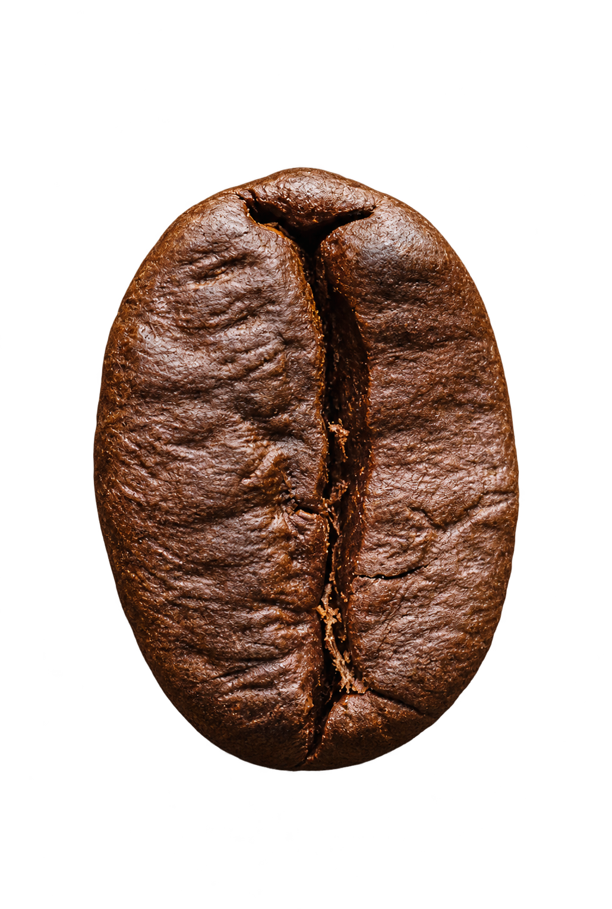

CAFÉ DE LEY
¿Qué es el
cold brew?

Te contamos cómo se hace.
DEL GRANO AL VASO
CAFÉ DE LEY

Te contamos cómo se hace.
DEL GRANO AL VASO
¿QUÉ ES EL COLD BREW?
Café, agua fría y unas horas de espera.
El café molido se deja reposar en agua fría. Con el tiempo, el agua toma su sabor. Después se filtra y queda listo para servir.
CAFÉ DE LEY
En Café de Ley exploramos cómo llevar diferentes perfiles de café de todo el mundo al cold brew. Esto con el fin de que cada vaso cuente algo distinto, sin perder la esencia del café.